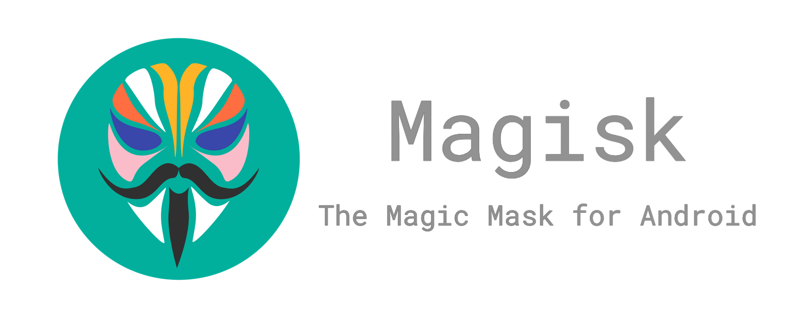
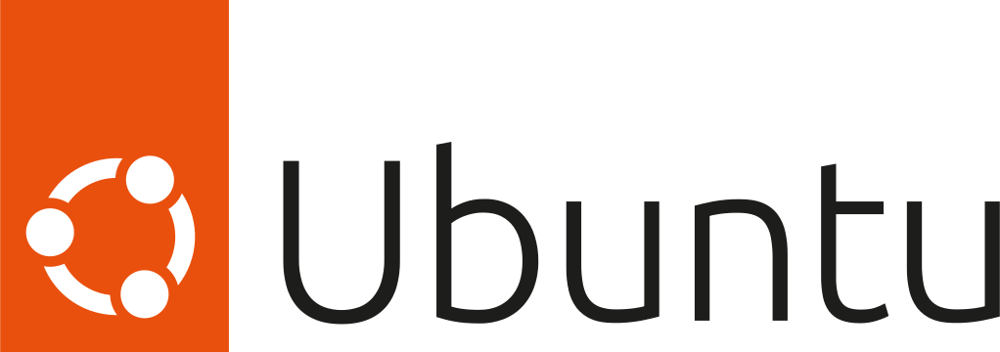
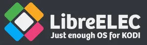
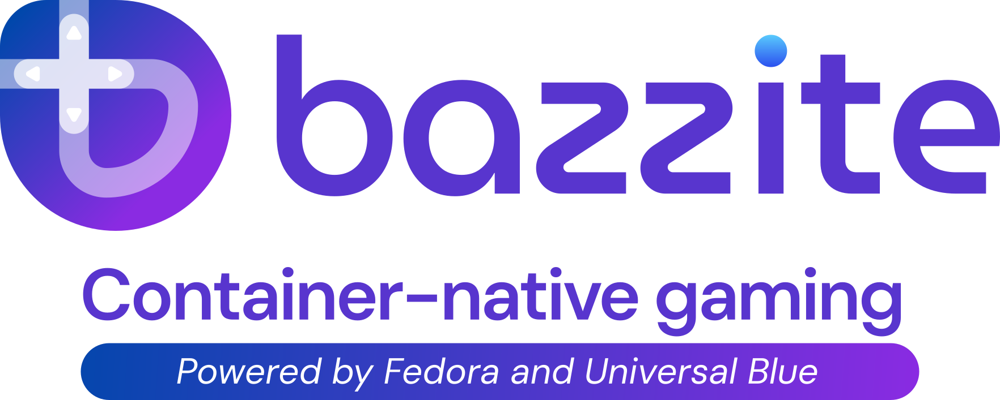
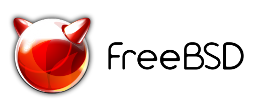
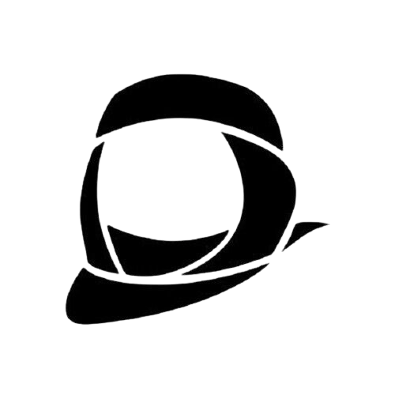

Computer Systeemen
ik heb ervaring met velle soorten software op beide ARM en x86 Systeemen zoals...
-
Android

Ik heb al jaren een Android telefoon maar ben pas sinds 2020 bezig geweest met Custom Roms zoals Lineage OS en ook andere dingen zoals Termux of Root Software.
-
Linux
  Ik heb ervaring met Linux sinds 2020 met Ubuntu en heb het systeem gebruikt voor 2 jaar
maar ben ik terug gestapt naar windows vanwegen mijn opleiding maar heb ik nog steeds andere Linux Computers
zoals mijn bazzite "Gaming console" PC of mijn LibreElec Raspberry Pi of de LibreElec PC die ik voor mijn Opa en Oma onderhoudt. -
Windows
Ik heb zelf nooit Windows leuk gevonden, en wil graag iets anders gebruiken als ik de kans ervoor krijg.
-
FreeBSD
 FreeBSD is een van mijn favorite systemen omdat het gevormt is van een bijna 50 jaar oud.
Ik ben zelf begonnen met FreeBSD gebruiken als draagbare systeem voor Bijv. Vakantie
of als ik iets moest maken voor school zonder mijn eigen computer.
Programmeren
Ik heb niet veel maar ik kan in HTML, CSS en JS en een van die voorbeelden is deze site
Ik ben nu ook aan het kijken naar het proberen van Node.js om daar ook iets mee te kunnen doen
In mijn vrije tijd ben ik aan het uitzoeken om een IPTV Player te maken voor Tizen tv's maar dat is nu nog een experiment